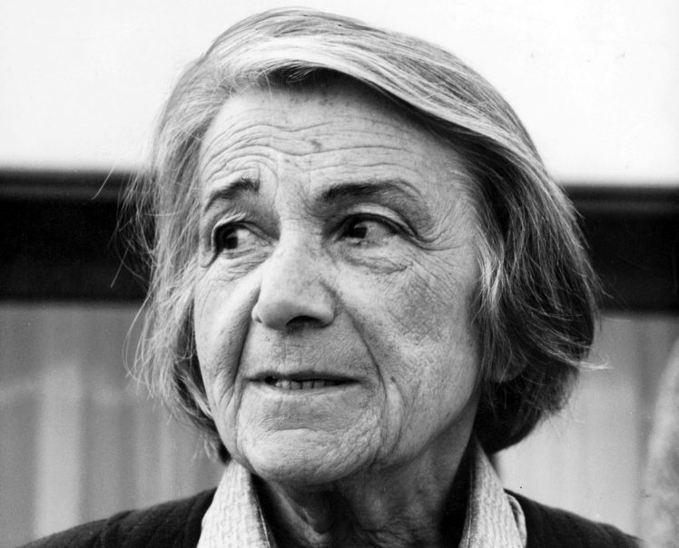

.Nathalie Sarraute [1902-1999]
Người ta gọi bà là nhà văn của tuổi xuân bất diệt, là vị Giáo sư tuyệt vời về cuộc sống, là người trả lại sức sống cho ngôn từ, kẻ tiên phong của trào lưu tiểu thuyết mới. Một trong những nhà văn lớn của thế kỷ.
Văn học Pháp là một bức tranh đa sắc vì nó hội tụ được tài năng bốn phương trong thế giới tiếng Pháp - Bắc Phi và châu Phi, Canada và châu Mỹ, châu Á, Nga và Đông Âu – một chân trời văn hóa rộng mở mà bản thân Nathalie Sarraute [1902-1999] là một thí dụ. Bà sinh ngày 18/7/1902, tục danh là Natacha Tcherniak, con một kỹ sư hóa chất gốc Nga – Do Thái và một bà mẹ là nhà văn. Nhưng khi mới lên hai, cha mẹ ly hôn, Natacha lớn lên giữa Paris và Saint Petersbourg vì người cha phải sống lưu vong ở Paris do đã tham gia cuộc đấu tranh chống chế độ Sa hoàng. Vào năm 1920, trong khi là sinh viên đại học tại Gèneve, Natacha đã leo lên Mont Blanc, đỉnh núi cao nhất châu Âu, một thành tích hiếm hoi của phái nữ thời ấy. Hai năm sau bà sang Paris học luật. Năm 1923, bà kết hôn với Raymond Sarraute, người từng gặp gỡ bà trước đấy ba năm và không ngừng khuyến khích bà lao vào sự nghiệp văn chương và cùng bà sinh ra ba cô gái. Vào năm 1932 Nathalie Sarraute rời bỏ ngôi Pháp đình, tiếp cận thế giới văn học với những tác phẩm đầu tay: Bị tước nghề luật sư vào năm 1940 vì gốc gác Do Thái, Nathalie may mắn thoát khỏi sự bắt bớ năm 1942 và cho đến khi nước Pháp được giải phóng khỏi ách Quốc xã, bà sống dưới cái tên mới là Nicole Sauvage theo những giấy tờ giả do chồng, một thành viên trong phe kháng chiến, cung cấp cho và hành nghề gõ đầu trẻ. Kể từ năm 1945 trở đi là thời kỳ bà viết ra những tác phẩm quan trọng nhất, bất chấp việc trải qua một thời kỳ bị bệnh lao trầm trọng.
Khi Tropismes (Những hướng động), một tập hợp những tác phẩm đầu tay ra đời vào năm 1939 nhưng hầu như không được để ý đến, thì Max Jacob đã chào đón tác giả là “một nhà thơ lớn” và Jean Paul Sartre đã bị quyến rũ bởi “cái duyên” của tác giả và giọng văn “chính xác và tự nhiên”. Sau chiến tranh, nhà văn nữ tiên phong của trào lưu Tiểu thuyết mới này bắt đầu thực hiện dự án đổi mới nền tiểu thuyết bằng việc thu hẹp tầm quan trọng của thủ thuật dẫn dắt câu chuyện và vai trò các nhân vật: Các tác phẩm: Portrait d’un Inconnu (Chân dung một người vô danh,1948), Martereau (1953) và Le Planétarium (Nhà hành tinh, 1959) tuy còn có chủ đề và nhân vật, nhưng việc quan tâm đến trang trí và vật liệu chiếm phần ưu thế. Những đối thoại chen vào giữa dòng trần thuật đã sớm chiếm lĩnh tác phẩm. Tiếp đó Les Fruits d’or (Những quả vàng, 1963), Entre la vie et la mort (Giữa cái sống và cái chết, 1968), Vous les entendez? (Bạn có nghe chúng không?, 1972), Disent les imbeciles (Bọn mất dạy nói, 1976), L’Usage de la parole (Việc sử dụng ngôn từ, 1980), Enfance (Tuổi thơ, 1983), Tu ne t’aimes pas (Mày không thương lấy mình, 1989), Ici (Tại đây, 1995), Ouvrez (Mở ra đi, 1997) đã nói lên sự tìm tòi đó.
Cạnh đó là những tìm tòi về sân khấu với nhiều vở kịch: Le silence (Sự im lặng, 1964), Le Mensonge (Sự dối trá, 1966), Isma (1970), C’est beau (Đẹp đấy, 1975), Elle est là (Cô ấy ở đấy kìa, 1978), Pour un oui ou pour un non (Vì một tiếng có hay không, 1982). Đấy là chưa kể những khảo luận trong đó bà trình bày quan niệm về Tiểu thuyết mới.
Đối với Nathalie Sarraute, ngay từ đầu, là việc tái lập lại thực tại. Bà tìm kiếm nó, nói lên nó một cách không dữ dằn, không khoa trương, không mệt mỏi từ tác phẩm này đến tác phẩm khác. Fruits d’or làm cho người đọc chia sẻ cuộc đời nhân vật từ khi ra đời đến khi lìa đời, một sự vận động liên tục, từ sự nảy mầm, trưởng thành, sự tiêu xài và tàn lụi qua những vòng đời. Đọc Enfance, người ta có cảm giác rằng cuộc sống nằm ngay trong ngôn từ. Những câu chữ nghe ra hay, đọc ra giống như những bức tranh được bày dưới ánh sáng, nói lên thực tại trong hình thể và màu sắc, chúng chuyển động, bay bổng, lẩn trốn, sống động và sáng tạo. Giống như Nerval, Rimbaud, Roussel, bà đã đóng góp nhiều cho ngôn ngữ văn học với âm hưởng, tiết tấu, một thứ âm nhạc nội tại của ngôn từ và sử dụng nó như một phương tiện khám phá, không phục vụ cho một quan niệm nào có sẵn.
Điều này khiến người ta nghĩ đến huyền thoại. Sinh ra không từ cái gì, từ ngẫu nhiên, từ sự đồn đại, rồi phóng đại lên, tự giải đáp và tự cấu trúc lấy. Một giọng nói, rồi nhiều giọng nói cất lên trong cái đêm đen câm lặng đó. Dần dà, mỗi tác phẩm của bà đáp lời tác phẩm kia, tạo ra một sự chối bỏ. Luôn luôn khai thác cùng một suối nguồn không thay đổi đó, cái suối nguồn nuôi dưỡng sự tồn tại và chảy tới tương lai, mà giòng nước bao giờ cũng tinh khôi của tuổi thanh xuân. Những tác phẩm của bà, thật thế, là sức sống thanh xuân đời đời, là một sự nghiệp của khám phá, kinh ngạc, tìm tòi và thán phục. Người ta có thể liên tưởng đến tác phẩm Tiếng gọi của hoang dã (The call of the wild) của Jack London, hay tới tác phẩm của Conrad, Faulkner hay Roussel.
Đọc Enfance, người ta lại nhớ đến Những cuộc phiêu lưu của Oliver Twist, một tác phẩm của Charles Dickens, một truyện kể thật giản dị, gần gũi, dẫn chúng ta trở lại những tuổi đời tìm tòi và phát hiện cuộc sống. Hơn nữa, Enfance còn đưa người đọc vào thế giới ngôn từ, nơi mà toàn bộ cuộc sống trở nên mới mẻ, không vơi cạn và sức sống thanh xuân không chấm dứt. Chính là nhờ Nathalie Sarraute mà người ta tìm thấy lại con đường của sự ngạc nhiên và thán phục, như nhà đạo diễn sân khấu Pháp Jacquet Lassalle đã nói về bà “một Giáo sư tuyệt vời về cuộc sống”.